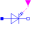

CharacteristicThyristorsCharacteristic of ideal thyristors |
|
Diagram
{kind=link}
Information
This information is part of the Modelica Standard Library maintained by the Modelica Association.
This example compares the behavior of the ideal thyristor and the ideal GTO thyristor with Vknee=1 both. The thyristors IdealThyristor1 and IdealGTOThyristor1 are controlled by an unregular Boolean fire signal. The aim is to show several cases for the fire signal in combination with the state (s<0 or s>0)of the thyristors. Please simulate until 6 seconds and compare IdealThyristor1.v with IdealGTOThyristor1.v, the same with IdealThyristor1.s and IdealGTOThyristor1.s (attention: s is a protected variable in each thyristor). Also compare IdealThyristor1.off and IdealGTOThyristor1.off and have a look at the fire signal (e.g. IdealThyristor1.fire). It can be seen that the IdealGTOThyristor1 reacts on switching off the fire signal whereas the IdealThyristor1 does not show this behavior.
The other thyristors IdealThyristor2 and IdealGTOThyristor2 are controlled by an periodic Boolean fire signal to show a typical use case. Please compare IdealThyristor2.v with IdealGTOThyristor2.v
Components (12)
| IdealThyristor1 |
Type: IdealThyristor |
|
|---|---|---|
| SineVoltage1 |
Type: SineVoltage |
|
| Ground1 |
Type: Ground |
|
| R3 |
Type: Resistor |
|
|  | IdealGTOThyristor1 |
Type: IdealGTOThyristor |
| R1 |
Type: Resistor |
|
| booleanStep1 |
Type: BooleanTable |
|
| IdealThyristor2 |
Type: IdealThyristor |
|
| R2 |
Type: Resistor |
|
| IdealGTOThyristor2 |
Type: IdealGTOThyristor |
|
| R4 |
Type: Resistor |
|
| booleanPulse |
Type: BooleanPulse |